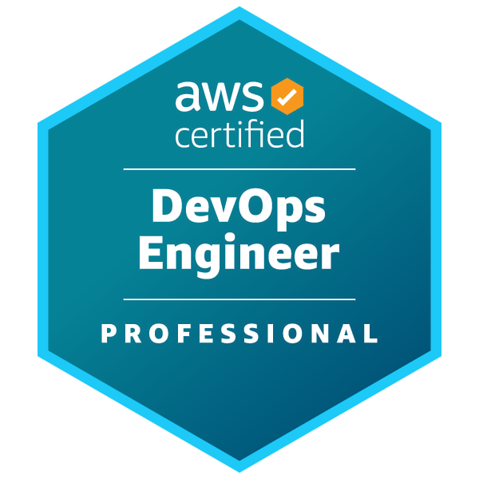
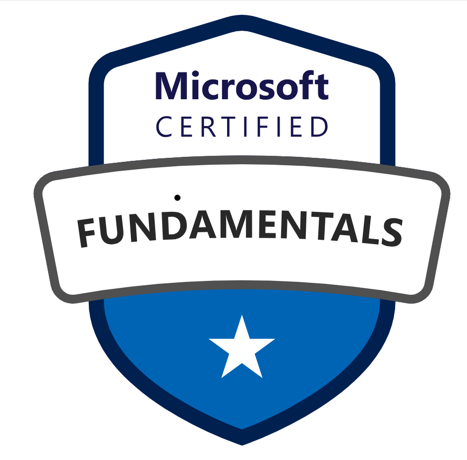

Project
Kubernetes Platform for Multi-Region SaaS
Built an EKS-based multi-region platform with GitOps for rapid, consistent deployments.
- Deploys: 3/week → 20/day
- MTTR: 90min → 15min
- Cost: -22% via rightsizing
DEVOPS ENGINEER



Building scalable pipelines, Kubernetes platforms, and robust observability across AWS/Azure/GCP.
DevOps engineer focused on automation, reliability, and cloud cost efficiency. Passionate about Kubernetes platforms, GitOps, and clean Infrastructure as Code. (Update this text later.)
Built an EKS-based multi-region platform with GitOps for rapid, consistent deployments.
Migrated to GitHub Actions with reusable workflows, caching, and parallelism.
AWS, Azure, GCP
GitHub Actions, GitLab CI, Jenkins, Argo CD
Terraform, Pulumi, CloudFormation
Docker, Kubernetes, Helm
Prometheus, Grafana, EFK, OpenTelemetry
Vault, Snyk, Trivy
- Led Kubernetes platform; introduced GitOps; reduced MTTR by 70%.
- Migrated CI/CD to GitHub Actions; pipelines 3.8× faster with caching and sharding.
- Containerized legacy apps; introduced monitoring and on-call runbooks.
Multi-region EKS platform with GitOps for consistent, auditable deployments and platform guardrails.
Architected EKS clusters across two regions with cluster-autoscaler, IRSA, and managed node groups. GitOps via Argo CD with app-of-apps pattern. Standardized Helm charts, progressive delivery, and SLO-based alerting with Prometheus/Grafana.
Modern GitHub Actions pipeline with composite actions, matrices, and caching.
Introduced reusable workflows, build/test matrices, Docker layer caching, preview environments, and trunk-based development with quality gates.
Ownership of platform reliability, scalability, and cost optimization.
Modernized CI/CD and cloud foundations.
Enablement and groundwork for platform practices.